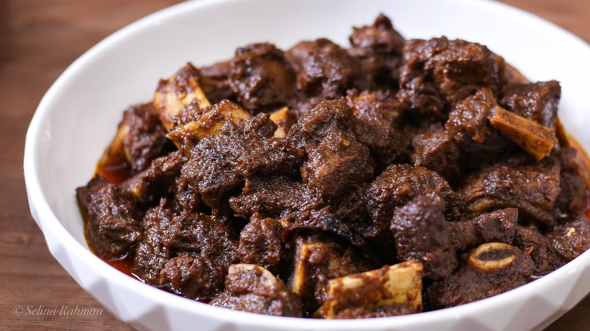
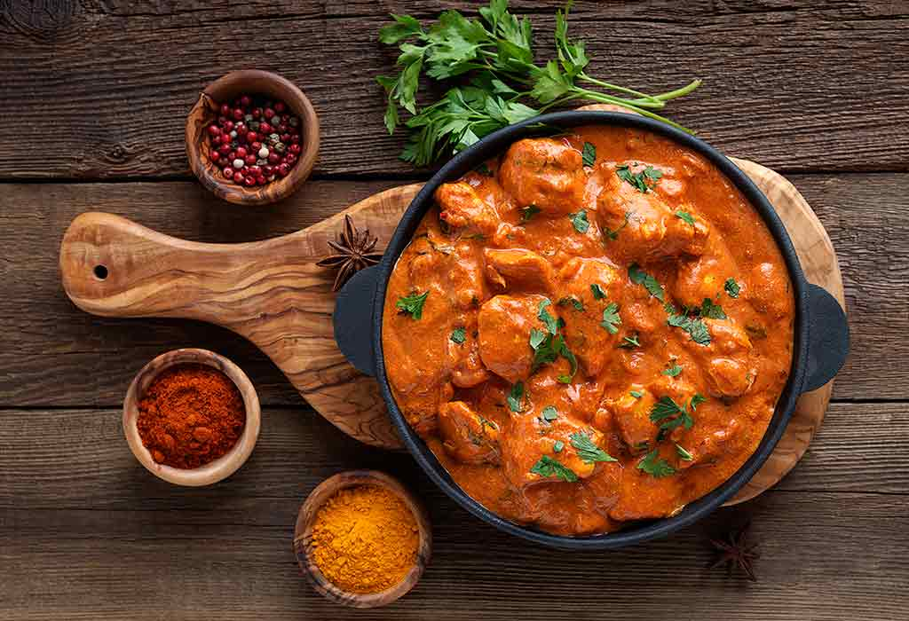
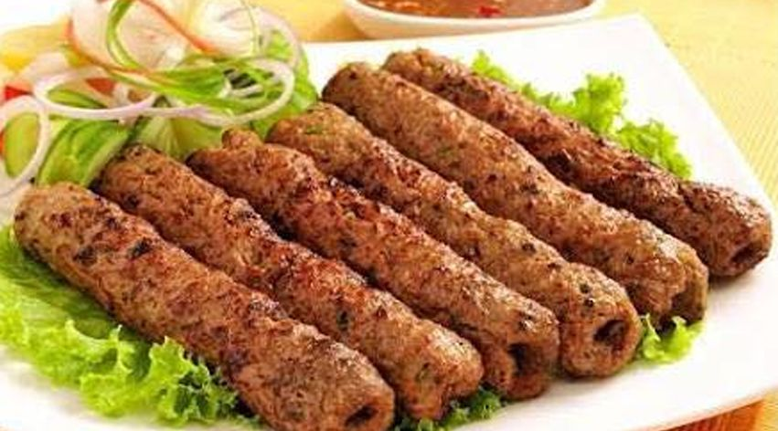

My Recipis
We specialize in international and Asian food cuisines at a reasonable cost that are affordable to people
of all levels. We serve foods in a clean, cozy and friendly environment as to maintain a lasting
friendship with our customers.

Beef Kala Bhuna
Natives of Chittagong used to cover their fried dark and tendered beef dish using banana leaves and
packed it for long tours on foot, nowadays aluminium foil is used instead of the traditional banana
leaf. The first major innovation that led to what is now known as kala-bhuna was the use of special
spices and the long frying technique.

Chiken Carry
This curry recipe is a traditional Indian dish that will take under an hour to cook. Serve it up with
some rice to round out your meal. Skip store-bought curry and learn to make your own. You won't be
disappointed by it's fresh taste.

Kebab Roll
Kebab Roll is a North Indian recipe made using mutton, onions, green chillies and coriander leaves
rolled into paranthas. On days you do not want to prepare an elaborate meal, this delectable dish
can be a saviour. Rolls are quite popular across India and they are often a favourite evening snack.